Tap to mark, hold to average
Record Marker snapshots instantly or averages for a few seconds for a more accurate point.
User Manual › Survey run screen
Survey
Mark a spot with a tap, average it with a hold. Record lines and terrain as you drive, or step off the machine and shoot points on a surveyor pole. Everything you need is on one map screen.
Record Marker snapshots instantly or averages for a few seconds for a more accurate point.
Switch between the vehicle and the surveyor pole with one button, and capture points exactly where you need them.
Speed, heading, elevation and satellites as status panels you drag into place. Exodus remembers them.
Re-anchor a returning project to a benchmark you already recorded.
Select the project and machine on the home screen, then tap Enter Job.
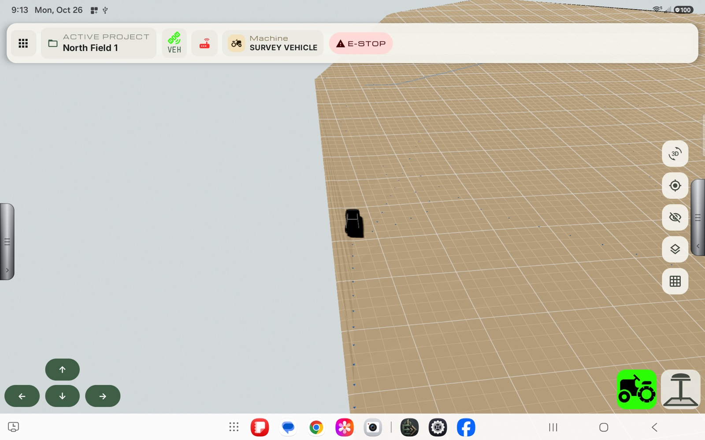
Until the project has a master benchmark, a banner reads Please Record Masterbenchmark to start work... and recording is disabled. Record the master benchmark first. Every other recording is positioned relative to it.
Most controls respond to a tap. Some also respond to a long-press (touch and hold for about a second) which opens a settings panel or a second action. Controls that have a long-press are marked Hold in the tables below.
| Control | Tap | Hold |
|---|---|---|
| Apps / home icon (grid) | Leaves the run screen and returns to the home screen. If something is still recording, you are asked to save or stop it first. | – |
| Active project | Shows the project name. | – |
| GPS icon (VEH and, if the pole is on, the rod) | Opens a small panel with Connection, Fix quality, Satellites and Source. Tap it again to close it. | Opens the GPS Diagnostics screen (see GPS Diagnostics). |
| Corrections icon | Opens the corrections screen. The icon is red when no correction stream is connected. | – |
| Machine name | Shows the active machine. | – |
| E-STOP | Not active on the Survey Vehicle at present. | – |
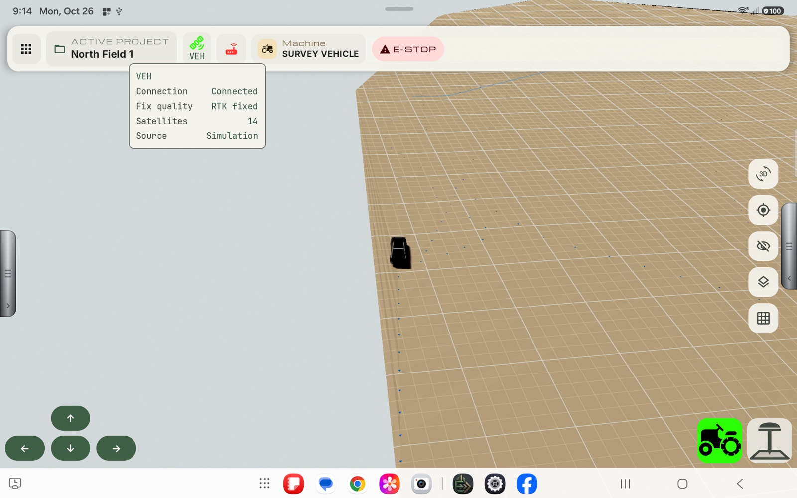
| Button | Tap | Hold |
|---|---|---|
| 3D (perspective) | Switches between flat 2D and 3D terrain view. If the project has no terrain and none is being recorded, it stays in 2D. | – |
| Target (camera) | Switches between locked (the camera follows the vehicle) and free camera. In free camera you pan and zoom the map yourself. | – |
| Eye (contours) | Shows or hides contour lines. | Opens Contour Lines settings. |
| Speedometer (status panels) | Opens Show on screen so you can add a live reading to the map (see Status panels). | – |
| Layers (terrain map) | Shows or hides the terrain map: a colored picture of the surveyed ground heights drawn over the map. It refreshes about every 2 seconds while terrain is being recorded. | Opens the opacity slider (and turns the map on if it was off). |
| Grid | Shows or hides the ground grid. | – |
Hold the eye button to open the settings.
| Setting | Meaning |
|---|---|
| Starting elevation | The elevation contours are measured from. Lines are drawn above and below it. Neg / Pos sets the sign. |
| Minor contour | Spacing between the thin lines. |
| Major contour | Spacing between the bold lines. It must divide evenly by the minor spacing. For example a 1 ft major line with a 2 in minor line. |
| Reset / Apply | Reset restores defaults; Apply saves your values. |
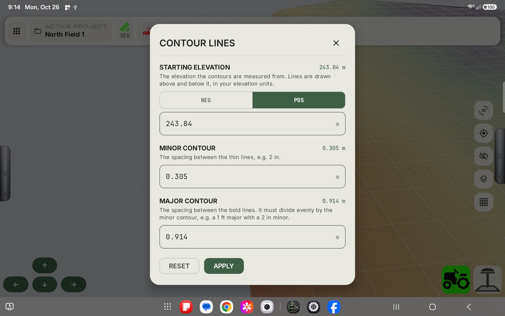
Hold the layers button to open the opacity card beside the column. Drag the slider to make the terrain map more or less see-through (default 60%). Tap the X to close the card. The map stays on or off, whichever you last chose.
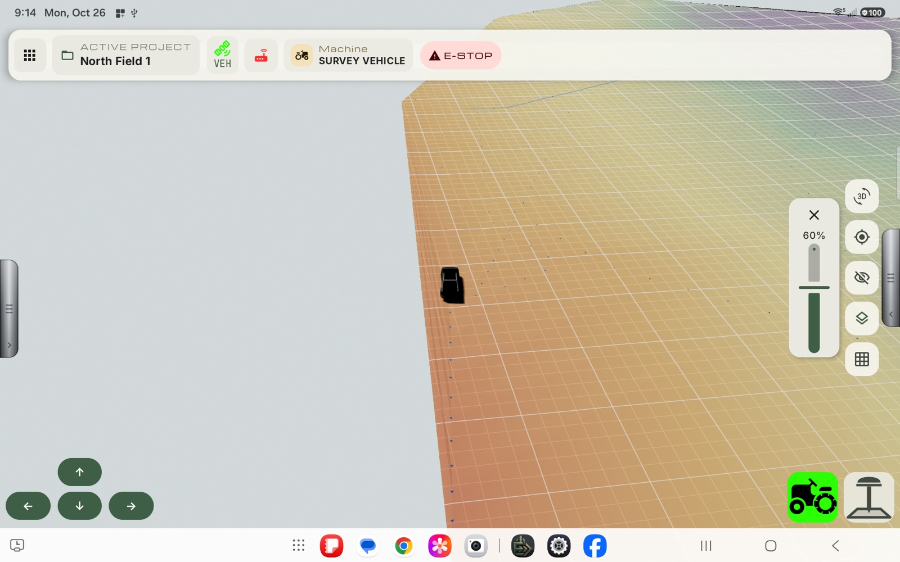
Tap the metal handle on the left edge to slide the panel open or closed.
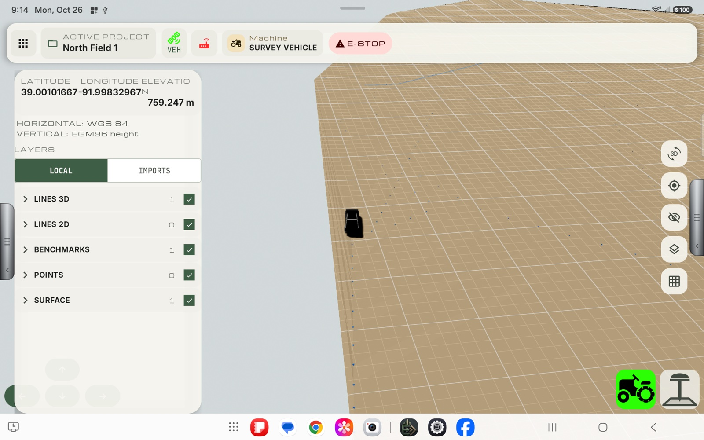
The top of the panel shows your live latitude, longitude and elevation, then the project's horizontal and vertical reference.
Below that, Layers controls what is drawn on the map.
| Control | What it does |
|---|---|
| Local / Imports | Local layers are what you have surveyed in this project. Imports are layers brought in from design files. |
| Group row (Lines 3D, Lines 2D, Benchmarks, Points, Surface) | Tap the row to expand it and see its individual items. The number is how many items it holds. |
| Check box on a group | Show or hide the whole group. |
| Check box on an item | Show or hide just that item. |
| Rebench arrow on a benchmark | Starts a rebench to that benchmark (see Rebench). Tap it again while it is running to cancel. |
Tap the metal handle on the right edge to slide the panel open or closed. The button column moves left to make room.
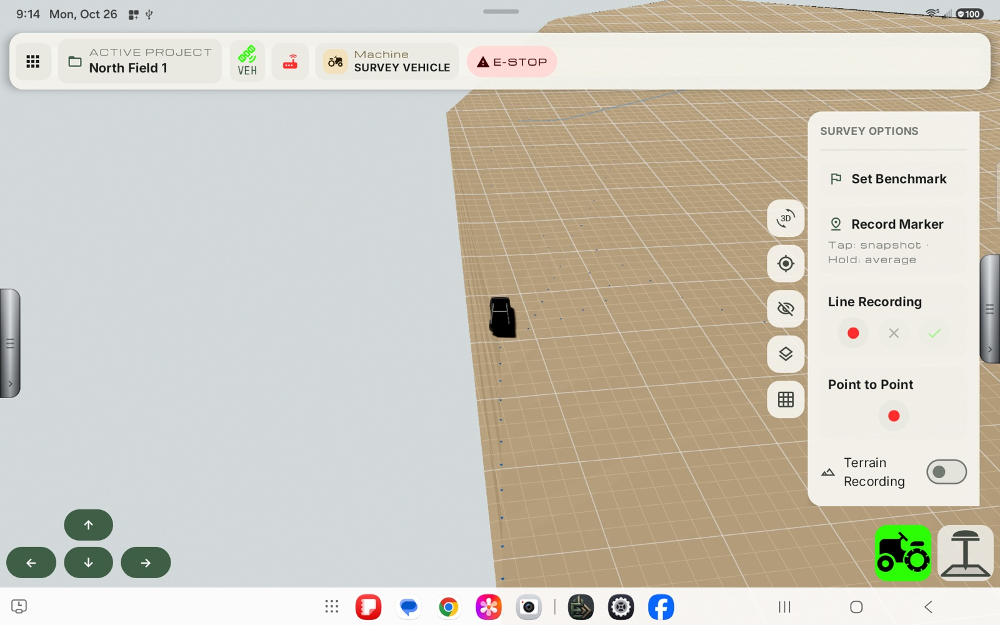
| Control | Tap | Hold |
|---|---|---|
| Set Benchmark | Records a secondary benchmark at the current position. A progress card shows the running average and can be cancelled. | – |
| Record Marker | Records a snapshot marker at the current position instantly. | Averages the position for a few seconds for a more accurate marker. Keep the receiver still. The button shows a countdown; tap it to cancel. |
| Line Recording: red dot | Starts recording a line. While recording, it becomes Pause (and Resume when paused). | – |
| Line Recording: required-depth marker (pipe with a pin) | Marks a point of interest on the line being recorded (see Points of interest on a line). The badge shows how many you have marked. Greyed out until a line is recording, and while it is paused. | – |
| Line Recording: X | Cancels the line and discards it, along with its points of interest. | – |
| Line Recording: check mark | Finishes and saves the line. | – |
| Point to Point: red dot | Starts a point-to-point line. | – |
| Point to Point: pin | Collects a point at the current position. It shows the distance and slope from the last point. | – |
| Point to Point: X / check mark | X cancels; check mark finishes and saves. | – |
| Terrain Recording switch | Starts or stops recording terrain. Points are added to the surface while you drive. | – |
Recording buttons are greyed out until the master benchmark exists. Terrain Recording is also greyed out for a moment while the project's saved terrain is still loading.
While you record a line you can mark points of interest (POIs). A POI is a spot along the line you want to remember, for example where a pipe has to be at a particular depth. Every POI belongs to the line that was being recorded when you marked it, and is saved with that line.
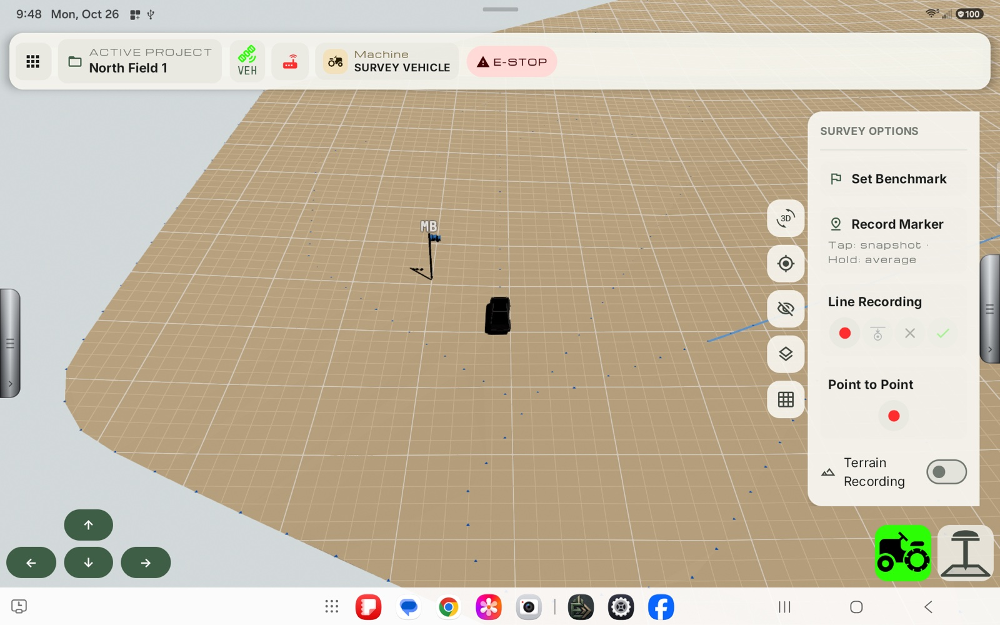
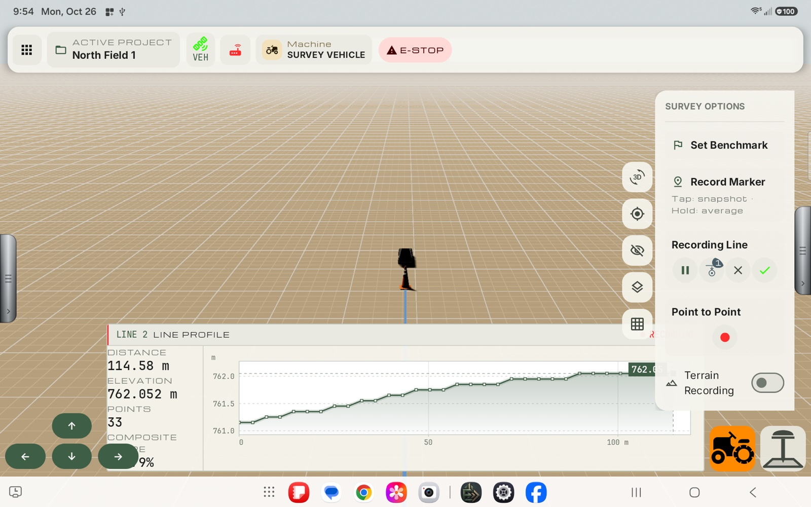
In this screenshot the vehicle has stopped just past the spot. The road cone stands on the ground behind it, and the badge on the button counts the point.
| Detail | What happens |
|---|---|
| What is recorded | A single snapshot of the receiver's position at the moment you tap, plus how far along the line it is. It is not averaged, so hold the vehicle or rod still when you tap. |
| On the vehicle | The line keeps recording as you drive. The POI is dropped where the receiver is when you tap. |
| On the rod | The line only takes points when you press Capture, but you can still mark a POI with the same button. |
| Two marks close together | A second mark within a short distance along the line replaces the first, so you never get a duplicate on one spot. |
| No fix | If there is no good RTK fix a POI is not recorded. Wait for a fix and tap again. |
| Paused | The button is greyed out while the line is paused. Resume the line first. |
| Cancel | Cancelling the line discards its POIs as well. |
Each POI is drawn on the map as a road cone standing on the ground at the spot. Cones appear as soon as you mark them and stay with the line once it is saved, so you can see where the marks are when you come back. Hiding the line's group in the left panel hides its cones too.
The two large buttons at the bottom right choose where the receiver is:
| Button | Meaning |
|---|---|
| Vehicle (tractor icon) | The receiver is on the vehicle. Lines and terrain record automatically as you drive. |
| Rod (pole icon) | The receiver is on the surveyor pole. Only shown when the pole was turned on in setup. Nothing records from the moving position; you take each point with Capture. |
The selected button is green, and turns orange while it is recording. The buttons are locked (dimmed) while a benchmark is being averaged.
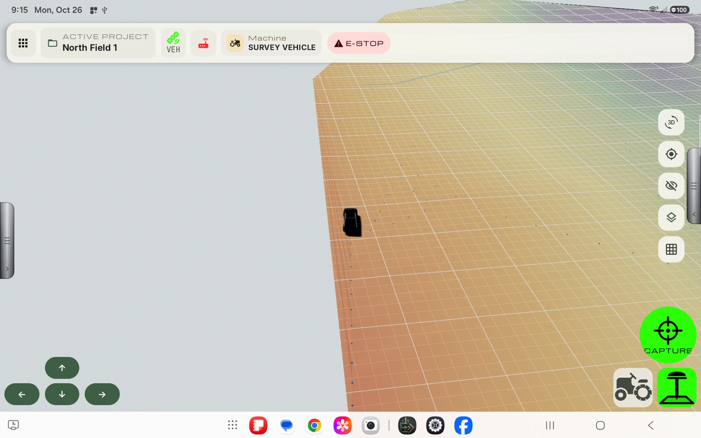
When the rod is selected, the large green Capture button appears above the mount buttons.
| Action | What it does |
|---|---|
| Tap | Adds the current point to the line or terrain that is recording. If nothing is recording, it records a snapshot marker instead. |
| Hold | Averages a marker, as with Record Marker. |
| Tap while averaging | Cancels the averaging. |
A message appears next to the button after each capture: Captured, Nothing is recording, No fix - hold the rod steady, Fix quality is too low or Too close to the last point.
Status panels put a live reading right on the map, so you can watch it while you work without opening anything. Each panel shows a title and a value with its unit, for example Speed 0 km/h.
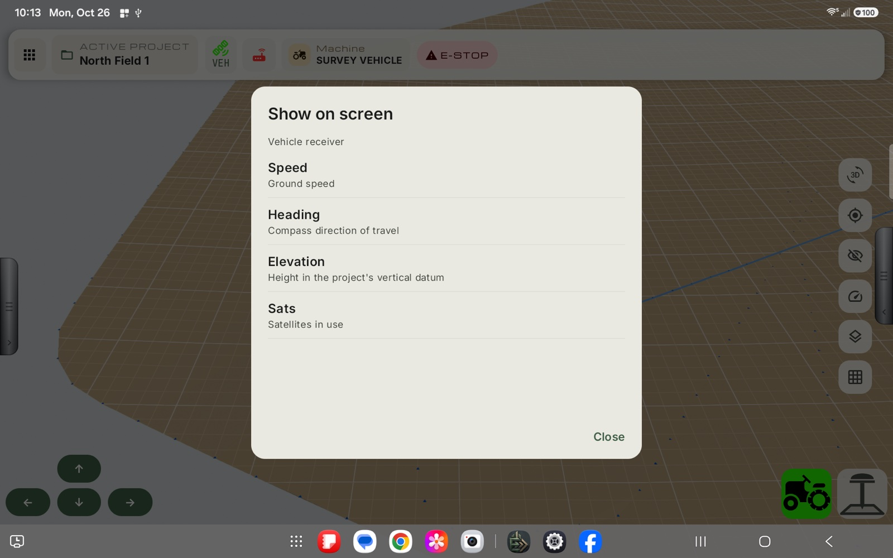
The survey vehicle can show these readings from its receiver:
| Reading | What it shows |
|---|---|
| Speed | Ground speed, in the speed unit chosen in your settings (km/h or mph). |
| Heading | The compass direction of travel, in degrees. |
| Elevation | The receiver's height in the project's vertical datum, in your elevation unit. It follows the receiver mount: with the vehicle selected it reflects the vehicle (using the antenna measurements), and with the rod selected it is the ground at the rod tip. |
| Sats | How many satellites the receiver is using. |
A survey vehicle has no blade, boot or design to work to, so the readings that depend on those (grade error, boot depth, pipe distance and pipe size) are not offered here. They appear on the tile plow screen only.
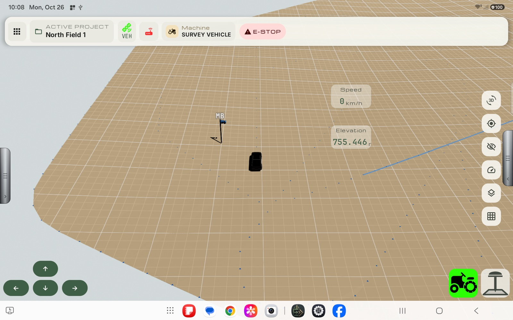
If there is no value yet (for example no fix), a panel shows a placeholder, and dims if the receiver goes quiet.
Touch and hold a panel until it shows an outline and a small X, then:
Panels are saved automatically. Close the app and come back, or leave the run screen and re-enter, and they are back where you left them.
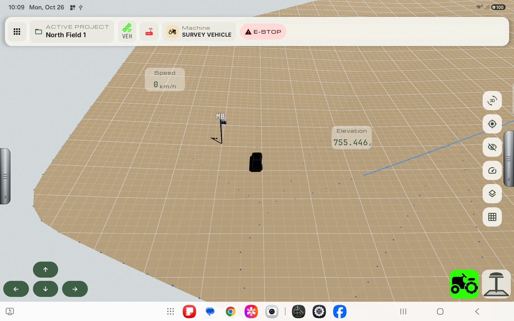
Rebenching re-anchors the project to a benchmark you already recorded. Use it when you come back to a site (or your receiver's corrections have shifted) and want today's measurements to line up with the benchmark you set earlier. Exodus averages the receiver's position while it sits on the benchmark and works out how far today's position differs from the stored one.
Only rebench when the receiver is physically on the benchmark, with a good RTK fixed position. A rebench changes how the project's coordinates line up with the real world. Do not start one just to see what it does; use Cancel if you start one by mistake.
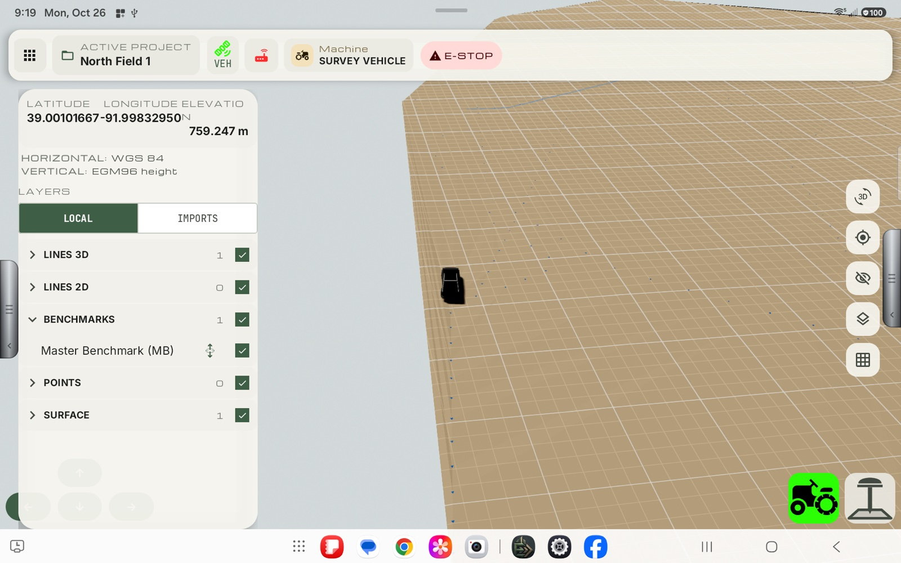
The panel closes and a progress card appears at the bottom of the screen.
The card is titled REBENCHING TO followed by the benchmark name, and shows a countdown on the right.
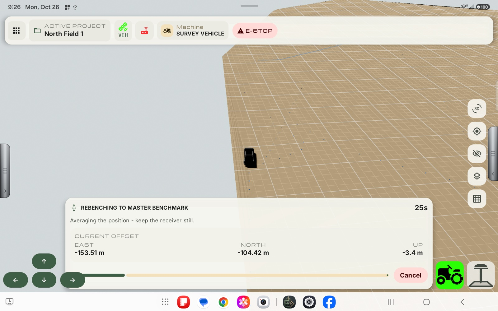
The offset in the screenshot above is large (about 153 m east) because the tablet was running in Simulation and the simulated vehicle was not at the benchmark. With a real receiver on the benchmark, expect a small number. A large offset is a sign you are rebenching to the wrong benchmark, or are not standing on it.
To stop, tap Cancel on the card, or tap the same rebench arrow again. Cancelling leaves the project as it was. While a rebench runs, the other benchmarks' rebench arrows are dimmed. They are also dimmed while a benchmark is being recorded.
A Rebench complete message confirms The project is now rebenched to <name>. Tap OK.
If it cannot finish you get Rebench failed with the reason. Fix the cause and try again.
| Message | What it means |
|---|---|
| Lost the GPS position while rebenching | The receiver stopped reporting a position. Check the GPS panel and the connection. |
| RTK fixed was lost while rebenching | The fix dropped below RTK fixed. Wait for the fix to return, check corrections, and retry. |
| The receiver moved while rebenching | The receiver drifted while averaging. Keep it completely still and retry. |
If the GPS source is Simulation, four arrow buttons appear at the bottom left. They drive the simulated vehicle forward, back, left and right so you can practice without a receiver.